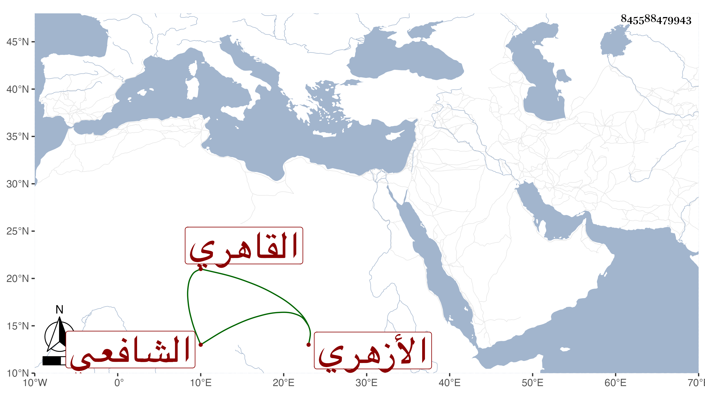

0902Sakhawi.DawLamic.ITO20230111-ara1.EIS1600.845588479943
Biography ID: 845588479943
940
إسماعيل بن عمران بن علي الصحافي ثم القاهري الأزهري الشافعي أخو موسى الآتي . ممن قرأ القرآن واشتغل وتردد لي يسيرا في تقرير ألفية الحديث مع حفيد القاياتي وغيره وتكسب بتعليم الأبناء وبالنساخة وربما اشتغل عند المتجددين من المدرسين . وهو خير من أخيه .
